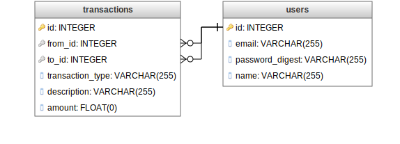

Tracking loans and payments between users
Tools like Venmo and PayPal have made it easier to quickly send money to friends when cash isn't convenient. For folks like roommates, with whom you have a lot of shared costs each month, it may make more sense to keep track of what you owe each other over time and settle up on a regular interval, rather than making many smaller transactions.
I'm working on a Rails application that would allow friends to help track this type of arrangement. The core functionality of the app will be tracking the loans and payments between users and tallying them up.
One interesting challenge about tracking these loans and payments is that each transaction has to be reflected for both users but in opposite directions. For example, if a user_a loans user_b $10, the app must be able to tell user_a that he is owed $10 from user_b and tell user_b that he owes $10 to user_a. I set out to accomplish this in a way that would be intuitive and avoid duplicating transactions in the database. I landed on creating two models — User and Transaction — with a schema that looks like this:

In the User and Transaction models, I set up some relationships: a transaction belongs to from and to, which are each users, and a user has many from_transactions and to_transactions. With two instance methods in the User model, I can track and total loans and payments between users.
class User < ActiveRecord::Base
has_many :from_transactions, foreign_key: "from_id", class_name: "Transaction"
has_many :to_transactions, foreign_key: "to_id", class_name: "Transaction"
def transactions_with(friend)
from_transactions.where(to_id: friend.id) + to_transactions.where(from_id: friend.id)
end
def owes(friend)
owes = 0
from_transactions.where(to_id: friend.id).each { |transaction| owes -= transaction.amount }
to_transactions.where(from_id: friend.id).each { |transaction| owes += transaction.amount }
owes
end
end
Calling user_a.transactions_with(user_b) returns all of the transactions between user_a and user_b, both when user_a is the from user and when he is the to user. In a future iteration of this method, I'll sort the transactions so that the newest ones are returned first, but this serves as a good starting point.
Calling user_a.owes(user_b) returns the amount user_a owes user_b by subtracting each transaction on which user_a is the from user and adding each transaction on which he is the to user. For a loan, this means when user_b makes a $5 loan to user_a, user_a.owes(user_b) increases by $5 and user_b.owes(user_a) decreases by $5. user_a could settle his debt by making a payment back to user_b, which would decrease user_a.owes(user_b) and increase user_b.owes(user_a) by $5.
August 04, 2015